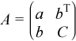
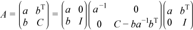
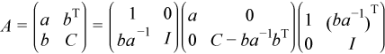

Intel® oneAPI Math Kernel Library Developer Reference - Fortran
Computes the partial LDLT factorization of a symmetric matrix using packed storage.
call mkl_sspffrt2( ap, n, ncolm, work, work2 )
call mkl_dspffrt2( ap, n, ncolm, work, work2 )
call mkl_cspffrt2( ap, n, ncolm, work, work2 )
call mkl_zspffrt2( ap, n, ncolm, work, work2 )
call mkl_sspffrtx( ap, n, ncolm, work, work2 )
call mkl_dspffrtx( ap, n, ncolm, work, work2 )
call mkl_cspffrtx( ap, n, ncolm, work, work2 )
call mkl_zspffrtx( ap, n, ncolm, work, work2 )
The routine computes the partial factorization A = LDLT , where L is a lower triangular matrix and D is a diagonal matrix.
The routine assumes that the matrix A is factorizable. The routine does not perform pivoting and does not handle diagonal elements which are zero, which cause the routine to produce incorrect results without any indication.
Consider the matrix

, where a is the element in the first row and first column of A, b is a column vector of size n - 1 containing the elements from the second through n-th column of A, C is the lower-right square submatrix of A, and I is the identity matrix.
The mkl_?spffrt2 routine performs ncolm successive factorizations of the form

.
The mkl_?spffrtx routine performs ncolm successive factorizations of the form

.
The approximate number of floating point operations performed by real flavors of these routines is (1/6)*ncolm*(2*ncolm2 - 6*ncolm*n + 3*ncolm + 6*n2 - 6*n + 7).
The approximate number of floating point operations performed by complex flavors of these routines is (1/3)*ncolm*(4*ncolm2 - 12*ncolm*n + 9*ncolm + 12*n2 - 18*n + 8).
ap |
REAL for mkl_sspffrt2 and mkl_sspffrtx DOUBLE PRECISION for mkl_dspffrt2 and mkl_dspffrtx COMPLEX for mkl_cspffrt2 and mkl_cspffrtx DOUBLE COMPLEX for mkl_zspffrt2 and mkl_zspffrtx. Array, size at least max(1, n(n+1)/2). The array ap contains the lower triangular part of the matrix A in packed storage (see Matrix Storage Schemes for uplo = 'L'). |
n |
INTEGER. The order of matrix A; n≥ 0. |
ncolm |
INTEGER. The number of columns to factor, ncolm≤n. |
work, work2 |
REAL for mkl_sspffrt2 and mkl_sspffrtx DOUBLE PRECISION for mkl_dspffrt2 and mkl_dspffrtx COMPLEX for mkl_cspffrt2 and mkl_cspffrtx DOUBLE COMPLEX for mkl_zspffrt2 and mkl_zspffrtx. Workspace arrays, size of each at least n. |
ap |
Overwritten by the factor L. The first ncolm diagonal elements of the input matrix A are replaced with the diagonal elements of D. The subdiagonal elements of the first ncolm columns are replaced with the corresponding elements of L. The rest of the input array is updated as indicated in the Description section. NoteSpecifying ncolm = n results in complete factorization A = LDLT. |